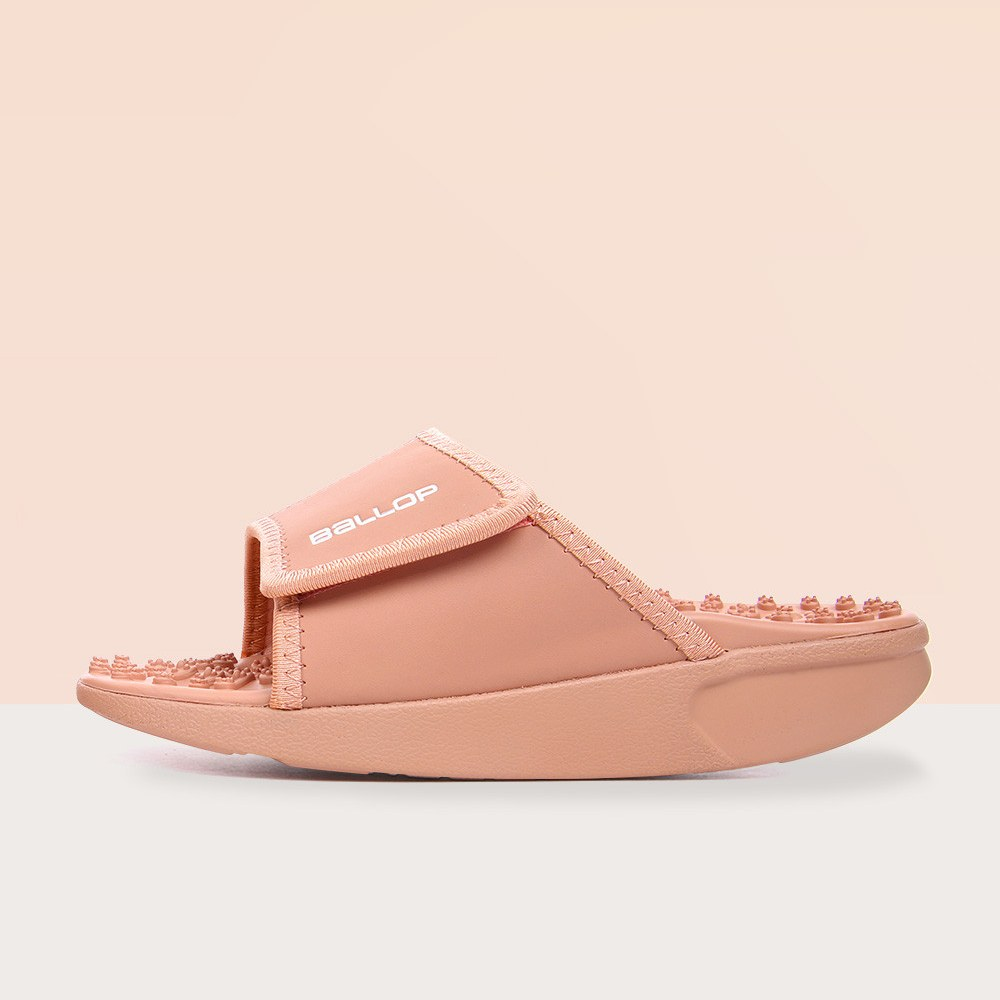
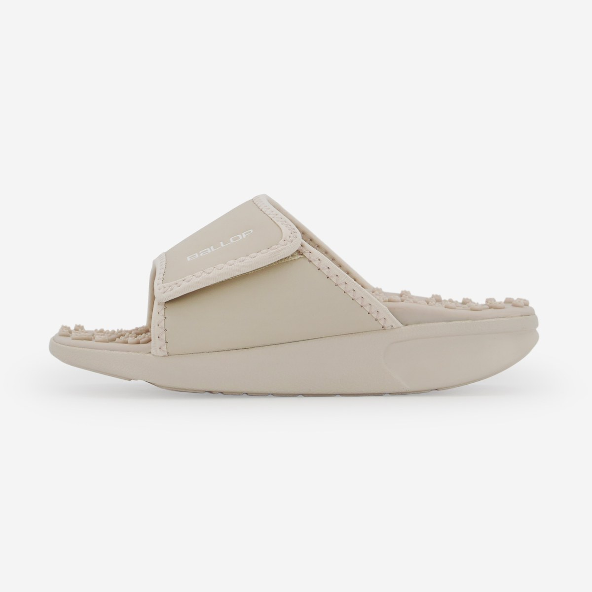
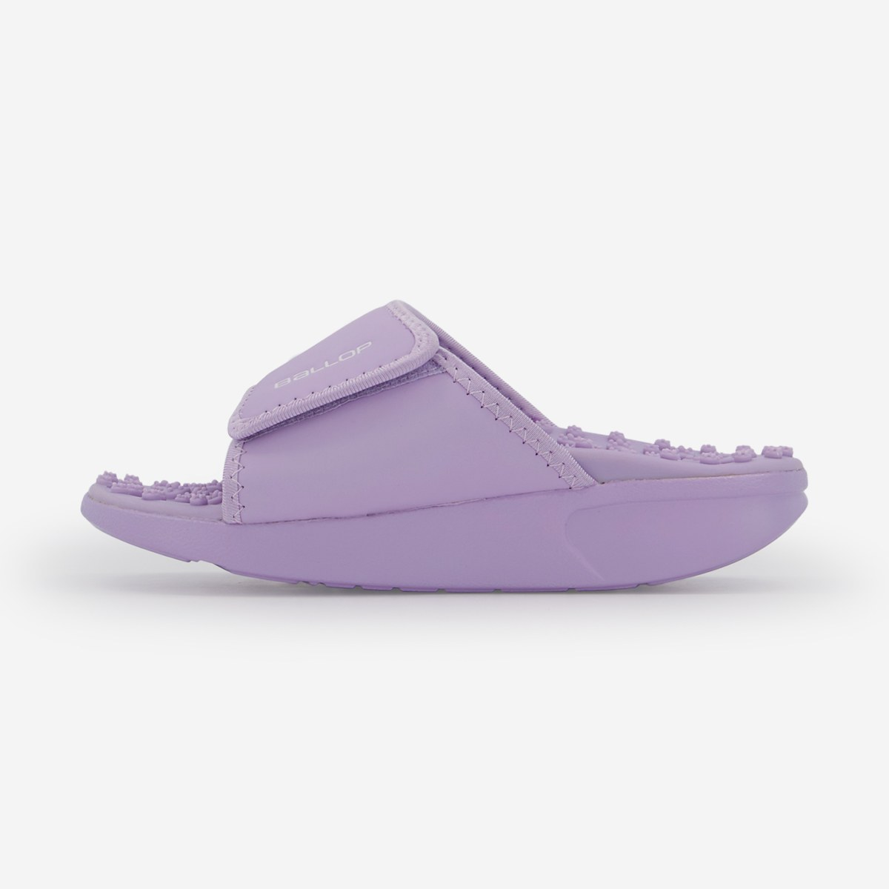

Ballop Caloring Acupressure Slippers Review at a Glance
This Ballop Caloring acupressure slippers review looks at a Korean indoor slide built for tired feet after long desk days. Ballop (밸롭) is a Korean footwear brand known for recovery and wellness shoes, and the Caloring style pairs a rocker-shaped sole with a footbed covered in rounded massage nubs.
They're meant for the home and office—not for pavement pounding. Here's the design, the feel and who should try them.

Design: Rocker Sole and Massage Nubs
Each slide has a wide adjustable strap (hook-and-loop), a thick EVA-style sole with a gentle rocker curve, and a full bed of soft-rounded nodules under the arch, heel and forefoot. The idea is light reflexology-style pressure while you walk short indoor distances or stand at a desk.


Key Details
| Item | Details |
|---|---|
| Brand | Ballop (밸롭), Korea |
| Model line | Caloring acupressure / massage indoor slippers |
| Type | Slide with adjustable strap |
| Footbed | Rounded acupressure nubs across the bed |
| Sole | Thick rocker-style foam sole |
| Use | Indoor / office (not outdoor hiking) |
| US Amazon | Exact model availability varies — search link provided |
How They Feel Day to Day
First steps feel noticeably "pebbly." Many people wear them 10–20 minutes while making coffee or answering emails, then switch back to regular slippers. The rocker sole encourages a slight roll through the foot, which some desk workers find more interesting than flat foam slides.

Photo note: Product-only photos from the Korean listing (no celebrity lifestyle shots). We didn't add AI images or blur.
Acupressure Slippers vs. Regular House Slippers
| Ballop Caloring | Regular Soft House Slipper | Firm Reflexology Sandal | |
|---|---|---|---|
| Feel underfoot | Massage nubs + rocker | Soft flat foam | Often harder spikes |
| Best setting | Desk, kitchen, short indoor walks | All-day lounge | Short dedicated sessions |
| Adjustability | Strap adjusts | Often slip-on | Varies |
| Outdoor use | Not the point | Sometimes | Usually no |
Pros & Cons
✅ Pros
- Clear Korean wellness-footwear brand with a simple design.
- Nubbed footbed + rocker sole feel different from flat slippers.
- Adjustable strap helps different foot widths.
- Easy to keep a pair by the desk.
⚠️ Cons
- Too firm for some people at first.
- Not for outdoor commuting.
- Exact US Amazon listing may be missing.
- Not a medical device for foot conditions.
Who It Suits (and Who Should Skip It)
- Great for: Desk workers who want a more stimulating indoor slipper.
- Great for: People curious about gentle reflexology-style footbeds.
- Great for: Short kitchen / apartment walks at home.
- Maybe skip: If you need plush soft slippers only, or you have foot medical issues (ask a clinician first).
Ballop Caloring FAQ
What are Ballop Caloring slippers?
They're indoor slide-style slippers from Korean footwear brand Ballop (밸롭). The Caloring line uses a rocker-style sole and a footbed covered in rounded acupressure nubs, with an adjustable strap.
Are they for outdoor walking?
They're designed mainly for indoor and office use. Treat them as house or desk slippers, not hiking shoes.
Do the nubs hurt?
They feel firm at first. Most people start with short sessions in socks or barefoot and build up. If you have foot injuries, neuropathy or circulation issues, ask a clinician before using massage footwear.
What colors are available?
Korean listings show several colors such as black, cream and dusty pink/peach. Stock changes by seller.
Can I buy Ballop on Amazon?
Ballop's exact Caloring model isn't always listed on US Amazon, so we link a search for similar acupressure / reflexology massage slippers.
Similar Acupressure Massage Slippers
Ballop's exact Caloring model isn't always on US Amazon, so here are similar reflexology / acupressure slippers.